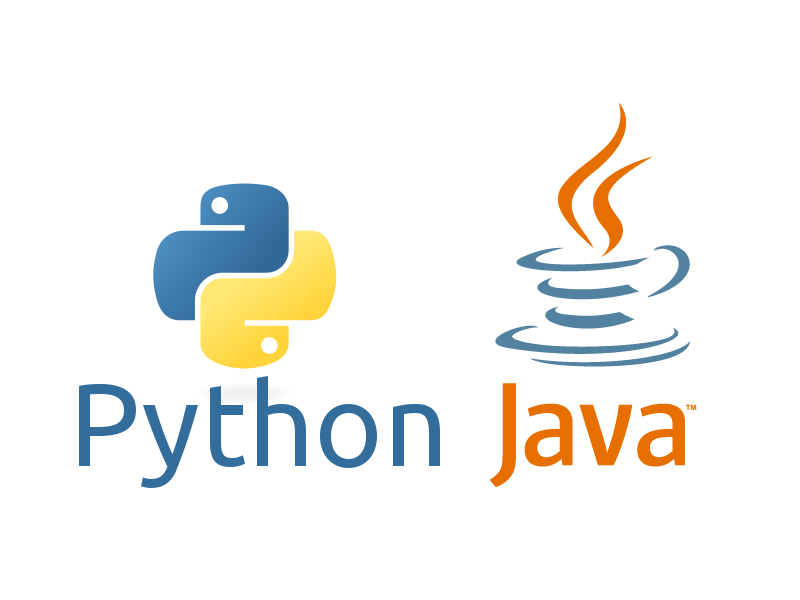

Academic Experience
I am a graduate of UNCC with a Bachelor of Science in Computer Science.
Now, I am pursuing a Master's degree in Computer Science.

Logo of the University of North Carolina at Charlotte
Programming Experience
I strive to learn to program as efficiently as possible in the field
of data science and analytics, and to professionally cooperate with peers in
group projects. Over the years, I have had many experiences programming in
the following languages:
- Java
- Python
- C
- C++
- SQL
- HTML
- JavaScript
I've also had experiences working with AWS web development and
video game design in GameMaker Studio.

Python and Java are the languages I am most experienced in
Link back to the Main Page
HTML Images